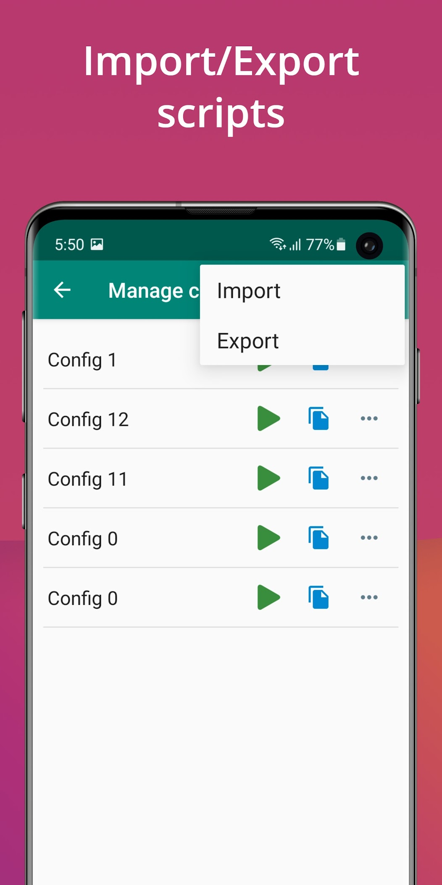
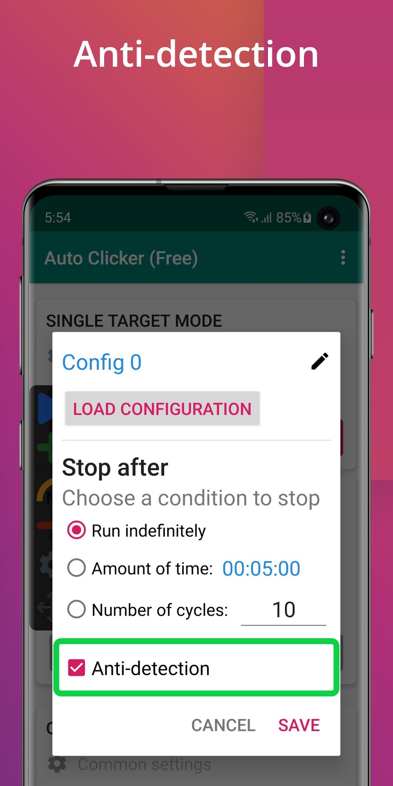

自动连点工具我换了五款，最后留下了 Auto Clicker
从一键连点到多目标序列，Auto Clicker 的配置体系和可预测性在同类里独一档——但它也确实不是给所有人准备的。
手机上的自动连点工具，生态里大致分三档：最底层的"一键连点器"，只在一个位置疯狂点，适合刷赞刷金币；中间档开始有多目标录制，但录制完就固化、改不了；再往上是能把整套操作流程化、可复用的——Auto Clicker 就站在这第三档里，而且是我试过的几款里做得最像"生产力工具"的。
为什么单独写它？因为这个类目里大部分产品要么太简陋，要么太像玩具——能录不能改、能跑不能停、换手机配置就全丢。Auto Clicker 把这些常见的"一次性问题"都当成正经需求解决了，这一点在同类里不多见。
它到底比同类强在哪
配置是一等公民，不是临时画布
同类工具最常见的痛点：布点完开跑，用完关掉就没了。下次再来，要么重新录一遍，要么翻半天找那段"上次好像存了"的模糊记忆。Auto Clicker 把这套布点加参数的组合正式叫做"配置"，并且给了它一整套生命周期——保存、复制、重命名、导出、导入。
配置管理页的交互很直接：每条配置一张卡片，绿色播放键直接载入运行，复制键在现有布局上改小细节，右上角菜单是导入导出。这意味着什么？意味着你可以把"消消乐每日体力"做成一套配置、"某手游领礼包序列"做成另一套，各自命名、各自更新，换机时整包导出带走——这在同类工具里几乎是独一份。我之前用过的一款号称"高级"的连点器，配置只能存在手机本地的某个深目录里，想换机还要手动去找那个文件，体验天差地别。

停止条件三选一，还能倒推时长
自动连点的价值在"不用人守着"，前提是它会在该停的时候停。但很多工具给你的选项只有"手动停"和"固定点 N 次"——睡前挂机想跑一小时？对不起，自己算去吧，或者干脆挂无限、明早起来看它白跑了一夜。
Auto Clicker 给了三种停止方式：无限循环、按时长、按次数。按时长是我最常用的——开跑前设好 45 分钟，洗完澡回来它自动收工。按次数的话，它还给了一个"倒推账"的思路：先有你想跑多久的预算，用单轮耗时除一下就得到轮数，留一成余量防误差。这个算法听起来不复杂，但能把它做成产品设计一部分的工具，我只见过这一款。
多目标序列的执行节奏同样可预测：编号就是顺序、每步间隔叠加出总耗时、一轮多久直接算得出来。试跑个两三轮确认落点没错，再改正式轮数——整个流程没有黑盒，不需要靠"多跑几次看运气"来调参。

权限和驻留问题，帮你把坑标出来了
很多连点器的说明书只有三行：开权限、录动作、按播放。然后你真跑起来会发现——面板没了、按了播放没反应、后台一清理全挂了。Auto Clicker 的文档把这些"默认你会踩的坑"整理成了三层排查路径：悬浮窗权限真开了吗、后台清理有没有掺和、系统层面有没有独立开关限制。甚至连"省电模式会临时禁止悬浮窗"这种定制系统特有的坑都写了。
这看起来像是个小事，但用工具的人都懂——一个"不出现面板"的问题，在别的工具上可能要卡半小时到处搜答案，在这里直接按三步排查就行。它的官网和文档也把这套完整排查流程都放出来了，不是藏在评论区或付费用户群里。
它为这些优势付出了什么
说优点容易，聊取舍才是真的。Auto Clicker 不是没有代价，而且代价还挺实在。
首先是上手门槛。第一次打开，界面上有单点模式、多目标模式、配置管理三套入口，每个配置弹窗里又有间隔、停止条件、防检测等一堆选项。对于"我就想在这个位置连点 50 次"的用户来说，这套设计确实显得重了——同类的一键连点器打开就一个大按钮，三分钟就能跑起来。Auto Clicker 的优势只在你需要"一套动作反复用"的时候才显现出来，纯临时用的话，它反而显得啰嗦。
其次是双权限依赖。从下载拿安装包装好后，还要同时开启无障碍服务和悬浮窗权限——少一个都跑不了。很多用户对无障碍服务有心理阴影（担心被滥用），悬浮窗又容易被后台清理收走。Auto Clicker 的文档里专门写了"让服务驻留"的操作步骤，但终究是个需要用户主动维护的事。我自己用下来，把它锁进最近任务 + 关掉省电模式，基本就稳了，但第一次配置确实花了点时间。
还有一点：没有录制功能。多目标序列要一个点一个点手动去布，不能像某些同类工具那样"我操作一遍它录一遍"然后自动生成序列。录制确实快，但生成的序列经常节奏乱、有些步漏掉、想改某个点的位置又得重录。手动布点慢，但是可控、可改、可预测——这是它的产品取向，不是缺点，但选它之前得明白这一点。
选购结论
如果你需要的就是"一个位置连点 N 次"，而且大概率只用一次就丢——别选它，找个一键连点器就行，几十 KB、打开就用。
但如果你同时满足这几条：有多步骤的序列要跑、希望配置能保存复用、经常需要挂机过夜、换过手机不想重布一遍——Auto Clicker 在同类里的体验优势是实打实的。我自己从"只用一次"到"配置越攒越多"的转变，就是在用第三周的时候——那时候我发现已经有七套不同的配置，换手机直接导出、一分钟搞定迁移。
最后给一句明确的推荐：你能接受第一次花十五分钟把权限配好、把第一套配置布完，然后让它在后台稳定跑几个月——这就是为你准备的工具。 如果不想花那十五分钟，那它就是个对你来说太复杂的东西，关掉找下一个就好。这款工具的安装包和全套文档，也被人分别镜像到了GitHub、Gitee 和 GitCode，各有一份，防止哪天原站访问出问题。